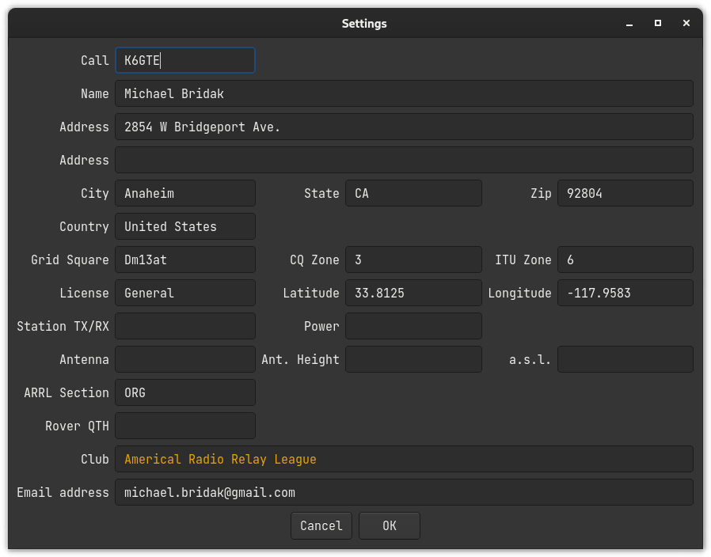

Station Settings Dialog
After initial run of the program or when creating a new database, you will need to fill out the Station Settings dialog that will pop up.

You can fill it out if you want to. You can leave our friends behind ’Cause your friends don’t fill, and if they don’t fill. Well, they’re no friends of mine.
You can fill. You can fill. Everyone look at your keys. You had to be around in the 80’s